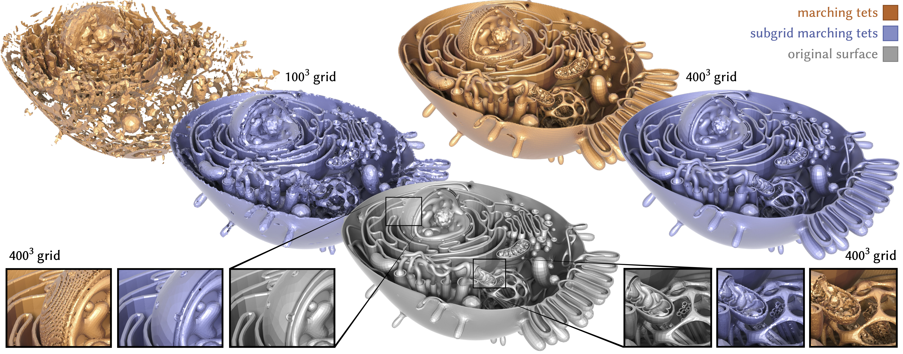

Subgrid Marching Tetrahedra
ACM Transactions on Graphics (SIGGRAPH 2026)

Abstract
We describe a method for recovering a manifold, intersection-free triangle mesh from the points where edges of a tetrahedral grid pierce a continuous surface. Unlike classic marching cubes or tets, our subgrid marching scheme allows arbitrarily many surface patches within a single cell, capturing fine features and thin sheets. Moreover, it requires neither a well-defined in- side/outside (allowing surfaces with boundary), nor consistently-oriented input geometry. Yet we retain the local, parallel nature of classic marching: reconstruction is performed independently per tet, yielding a conforming mesh across tet boundaries. Our key innovation is a generalization of normal coordinates from geometric topology, which encode surface connectivity via arbitrary integer intersection counts along each grid edge. This encoding sidesteps the usual Nyquist–Shannon limit, putting no lower bound on the size of features that can be resolved on a fixed grid. In practice, for similar compute time and equal grid resolution—or even an equal number of output triangles—meshes produced by subgrid marching are far more accurate than those from classic marching. Beyond standard contouring, our method can be used to convert polygon soup into a manifold, intersection-free mesh.
BibTeX
@article{Baktash:2026:SMT,
author = {Baktash, Hossein and Gillespie, Mark and Crane, Keenan},
title = {Subgrid Marching Tetrahedra},
journal = {ACM Trans. Graph.},
issue_date = {July 2026},
volume = {45},
number = {4},
articleno = {57},
numpages = {20},
year = {2026},
publisher = {Association for Computing Machinery},
address = {New York, NY, USA},
doi = {10.1145/3811358},
url = {https://doi.org/10.1145/3811358}
}